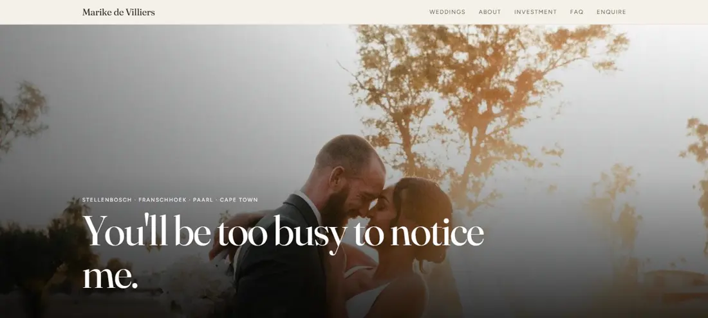

Websites that keep working
after they go live.
I'm William, a developer in Johannesburg. I build small sites and then run them — the design, the code, the hosting and the support emails. That second half is the part most people are missing.
Available for new work
Things I've built and still look after
Three live, one of them mine to run. Older experiments are on GitHub (opens in a new tab).

Three steps, and you know the price before I start
This is for small business work. If you photograph weddings, Lumen has its own page with the full offer and prices on it.
-
You tell me what's wrong
What the site needs to do, who it's for, and what you're working with now. A phone call or a long email, whichever you prefer. Free, and I'll tell you honestly if you don't need me.
-
I quote a fixed price
One number for the whole thing, not an hourly rate that drifts. If the scope changes we agree the change before I do the work, so there is never an invoice you weren't expecting.
-
It goes live, and I keep it running
You see the whole site on a real link before anything is public. After that, hosting, backups and the small changes you'll want every few weeks. You never have to learn a dashboard.
What it usually costs. Most small business sites land between R5,000 and R25,000 depending on how many pages there are and how much of the writing I do. Upkeep afterwards is R500 a month, and it's optional.
If your budget is under that, say so anyway — sometimes the answer is a single well-built page rather than a site, and that costs a lot less.
I reply within two working days, usually the same day.
Who you'd be dealing with
I build web products and then run them, which means I do the design, the code, the deploys and the support emails. It's a useful discipline: you stop shipping things that are clever to build and annoying to own.
In practice that means pages that load in about a second on a phone with bad signal, forms that actually submit, and layouts that hold together at 320 pixels wide. I care about accessibility, because a site people can't use isn't finished. When I'm not building, I'm usually climbing or picking apart some technology I have no immediate use for.
- Build
- HTML · CSS · JavaScript · TypeScript
- Frameworks
- Astro · Next.js · Tailwind CSS · WordPress
- Platform
- Supabase · Cloudflare Pages · Netlify · Git
- Focus
- Performance · Accessibility · Local SEO · Responsive layout
Johannesburg, South Africa.
Start a project
Tell me roughly what you need and what you're working with. I'll come back to you with questions, and an honest answer about whether I'm the right person for it.
Notes from building things
Mostly about running small products rather than just building them: what I tried, what it cost, and what the numbers actually said.